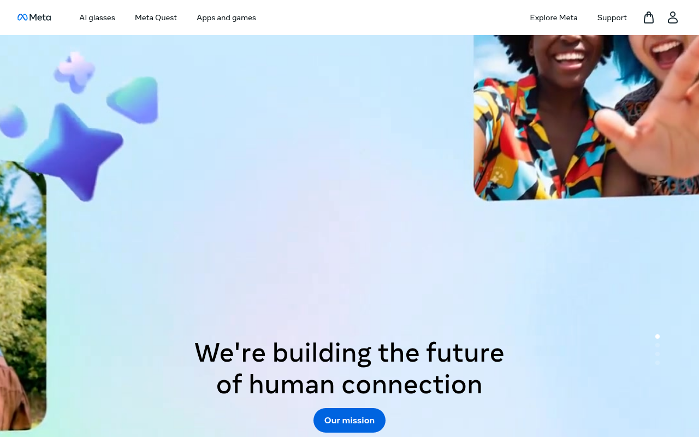

Meta — --primary-button-*
https://meta.com 이 실제로 서빙하는 CSS에서 직접 뽑은 디자인 토큰·타이포그래피·컴포넌트 스펙. 모든 값은 CSS 커스텀 프로퍼티를 파싱한 결과이고, AI 추론이나 추측은 섞이지 않았다.

body {
font-family: "Optimistic Text",
Montserrat, Helvetica,
Arial, "Noto Sans", sans-serif;
font-weight: 400;
}
:root {
--bg: #FFFFFF;
--fg: #1C1E21; /* 순흑 아님 */
}
body {
background: var(--bg);
color: var(--fg);
}
:root {
--brand: #0866FF;
/* --primary-button-background
2023 Meta blue */
}
#1877F2(구 Facebook 파랑)를 쓰는 것.
Meta 리브랜딩 이후 CTA 버튼 공식 색은 #0866FF로 바뀌었다.
#1877F2를 쓰면 즉시 "아직도 Facebook 시대" 느낌이 난다.
출처와 수집 기준
URL · fetch 시점 · 파싱 방식까지 모두 CSS 번들에서 직접 뽑은 값이다.
https://meta.com--primary-button-*테크 스택
Meta 자체 빌드 시스템 위에 Optimistic 폰트 시스템을 결합한 구조.
--primary-button-* 토큰)--primary-button-background, --primary-button-text.inputbutton, .uiHeaderNav, ._rz3#FFFFFF#0866FF — --primary-button-background에서 확인. 2021 Meta 리브랜딩 이후 공식 CTA blue.타이포그래피
Optimistic Display(헤딩)와 Optimistic Text(본문)를 구분하는 것이 핵심이다. Meta heading은 전부 weight 700이고 본문만 400이다.
Optimistic Display — Meta 전용, 헤딩에 사용
Optimistic Text — Meta 전용, 본문에 사용
Optimistic VF — 가변 폰트 버전
Menlo, Consolas, Monaco, monospace
400 / 700
Montserrat(오픈소스)가 가장 가까운 대체재다.
컬러
Meta 리브랜딩 이후 CTA 공식 색은 #0866FF다. #1877F2(구 Facebook), #4267B2(레거시), #0095F6(Instagram) 세 가지 legacy blue를 혼용하지 않도록 주의한다.
스페이싱
Meta는 8px 배수 내부 그리드를 기반으로 한다.
라디우스
Meta 버튼은 6px, 카드는 8px이다. 배지/태그는 pill(999px)을 쓴다.
소형 요소
버튼
콘텐츠 카드
배지 · 태그
컴포넌트
Meta primary button. --primary-button-background CSS 변수를 인라인으로 지정하는 것이 특징이다.
<button class="btn-primary" style="--primary-button-background:#0866FF;--primary-button-text:#FFFFFF;" type="button"> 시작하기 </button>
--primary-button-background: #0866FF--primary-button-text: #FFFFFFfont-weight: 700border-radius: 6pxpadding: 8px 16pxMeta primary · CSS 변수 인라인 지정 · weight 700 필수
라이팅 원칙
Meta 카피는 사람 중심, 연결 강조다. 포용적이고 따뜻한 어조를 유지한다.
CSS · Drop-in
루트 스타일시트에 바로 붙여넣으면 Meta 디자인 토큰을 그대로 쓸 수 있다.
/* Meta — copy into your root stylesheet */ :root { /* Fonts */ --font-family: "Optimistic Text", Montserrat, Helvetica, Arial, "Noto Sans", sans-serif; --font-family-display: "Optimistic Display", Montserrat, Helvetica, Arial, sans-serif; --font-weight-normal: 400; --font-weight-bold: 700; /* Brand */ --primary-button-background: #0866FF; /* ← canonical (2023 Meta) */ --primary-button-text: #FFFFFF; --brand-legacy: #4267B2; /* 레거시 잔존 — 새 CTA에 쓰지 말 것 */ --brand-instagram: #0095F6; /* Instagram 전용 */ /* Surfaces */ --bg-page: #FFFFFF; --bg-secondary: #F5F6F7; --text: #1C1E21; --text-muted: #7F7F7F; --border: #CCD0D5; /* Key spacing */ --space-sm: 8px; --space-md: 16px; --space-lg: 32px; /* Radius */ --radius-sm: 4px; --radius-btn: 6px; --radius-card: 8px; --radius-pill: 999px; }
// tailwind.config.js module.exports = { theme: { extend: { colors: { brand: { DEFAULT: '#0866FF', // canonical 2023 Meta legacy: '#4267B2', // 레거시 — 새 CTA 쓰지 말 것 instagram: '#0095F6', // Instagram }, neutral: { text: '#1C1E21', muted: '#7F7F7F', secondary: '#F5F6F7', border: '#CCD0D5', }, }, borderRadius: { btn: '6px', card: '8px', pill: '999px', }, fontFamily: { sans: ['Optimistic Text', 'Montserrat', 'Helvetica', 'Arial', 'sans-serif'], display: ['Optimistic Display', 'Montserrat', 'Helvetica', 'sans-serif'], }, }, }, };
Do / Don't
Meta 디자인 시스템을 구현할 때 가장 자주 틀리는 항목들.
DO
- CTA 버튼 배경은
#0866FF(2023 Meta blue)을 써라. - 텍스트는
#1C1E21을 써라 — 순흑이 아닌 Meta의 dark gray다. - 보조 배경에는
#F5F6F7을 써라. - 큰 heading에
font-weight: 700을 써라 — 본문(400)과 명확히 구분한다. - heading 크기에 비례해 letter-spacing을 음수로 조정하라.
DON'T
#1877F2(구 Facebook 파랑)를 primary로 쓰지 마라 — Meta는#0866FF다.#4267B2를 현재 CTA에 쓰지 마라 — 레거시 폼 버튼 잔재다.- Optimistic 폰트를 재배포하지 마라 — Meta 전용.
Montserrat를 fallback으로 쓰라. - 본문에
font-weight: 700을 쓰지 마라 — 기본은400이다. - 다크 테마를 기본으로 쓰지 마라 — Meta는 라이트 기반이다.